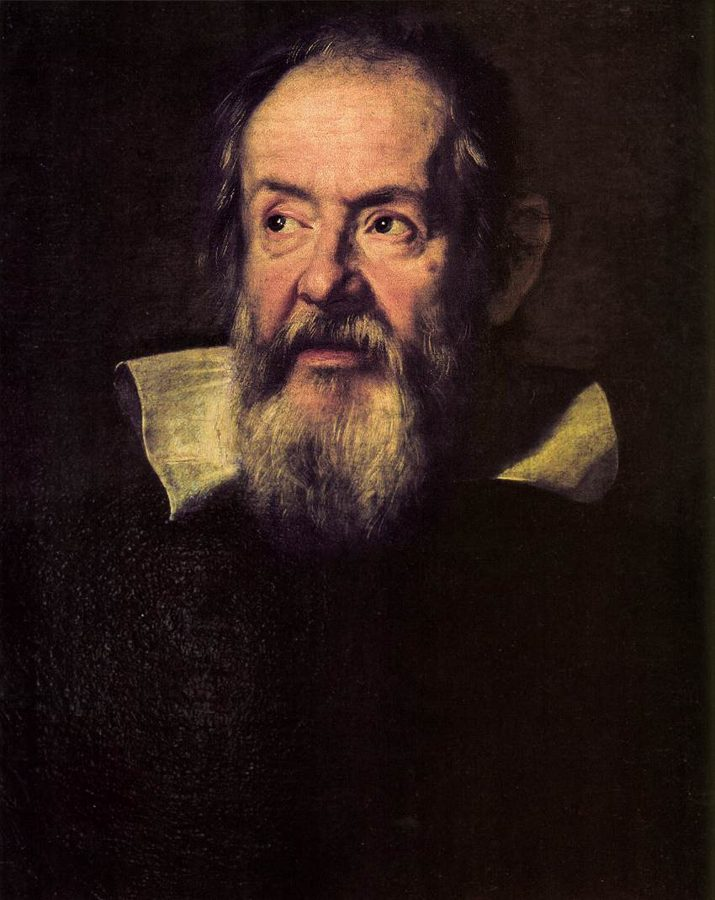
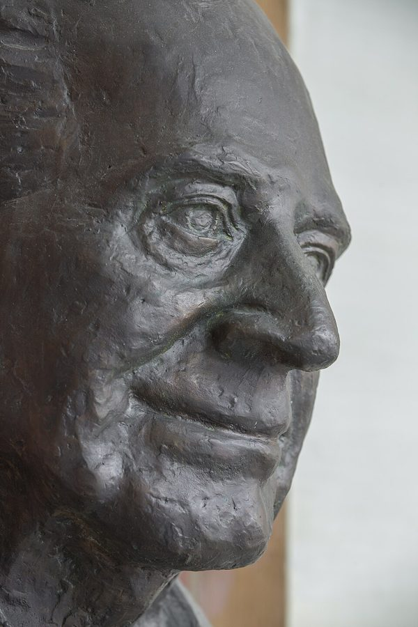
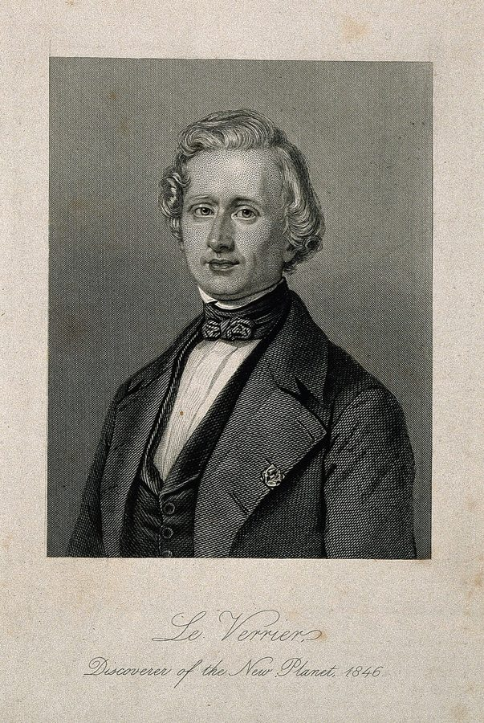
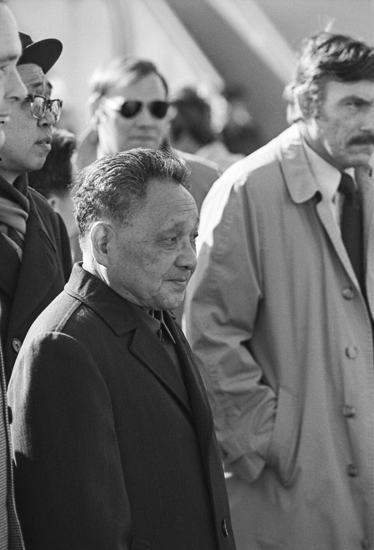

as yet
… predictions about as yet unseen situations …
至今还（没有）
书面语，as yet unseen 就是「还没见过的」。科学的本事是预测没见过的情况。
上一章说，归纳永远证明不了一条规则是对的。这一章看科学怎样绕过这个死结：动手做实验，专门去找反例。作者先给「实验」下一个全书都要用的定义，再借 Popper 讲证伪，借 Kuhn 讲范式，最后拿出他自己的调和。读的时候抓两条线：作者怎样定义「可靠的预测规则」，后面他要拿这把尺子去量社会科学；以及他为什么把范式叫作一个「凑合方案」。
第 1 章停在休谟：不管看到多少次，一条规则背后总可能藏着没发现的条件。第 1 章第 26 段顺口提到「可控实验」，正式的定义在这一章第 2 段。这一章立起的几样东西：实验、证伪、重复验证、可靠性，是全书的方法底座，后面每一章都要用。最后一段留了个问题：科学不求绝对真理，那「进步」以什么为参照？第 3 章接着回答。
§2 第 35 段说地心说「本轮套本轮」越补越乱、哥白尼的本轮比托勒密还多。作者自己说这是简化的概述；科学史家认为「本轮套本轮」是流传很广的误传。读个意思就好，详见「书里的人、研究和背景」。
既然实验永远证明不了一个理论是对的，科学凭什么比别的知识更可靠？
读的时候带着这几个问题。不用先找答案，读完回来对照「检查一下理解」。
§1 是一段定义密集的推进：从第 1 章的归纳难题起步，先给实验下定义，用比萨斜塔演示「实验能推翻、不能证明」，再把这个不对称交给 Popper，列出三条推论；接着补上重复验证，最后在第 17–23 段给出作者自己的「可靠性」定义。这几段像教科书，读慢一点。§2 转向难题：一个观察到底推翻了哪个理论？先讲天王星和海王星，再插进作者自己在 MIT 的经历，然后才请出 Kuhn。第 39 段作者故意把 Kuhn 推到极端，说科学像退回了经院哲学，第 40 段一句反问就把它翻过来，别把第 39 段当成作者的结论。§3 是他的综合，第 46 段突然冒出一句「中国古谚」，第 52 段把培根到 Kuhn 串成一条螺旋。
作者落在哪：实验只能推翻、不能证明，科学没有绝对的真理，只有经住了严格检验、在规定范围内预测得准的规则。作者认为范式不是科学的毛病，而是让证伪在现实里转得动的凑合方案，评判它只看能不能产出可检验的预测。
这一页是原书第 2 章的三节，粗体是本站给的节名，下面是原书这一节第一段开头的几个词，在 Kindle 里搜它就能跳过去（原书的小标题也在目录里）。每节标了档：「先读」不读就跟不上全书主线，「有空」好看但跳过不丢线。读完打个勾。
先把这一页用到、作者默认你懂的几个概念讲一遍。讲的是概念本身，作者拿它推出什么，读原书时自己看。前面讲过的归纳问题、隐藏条件，后面要讲的混杂因素、作者说的不显然，点进去看。
想知道 A 会不会导致 B，有两种办法。一种是观察：在自然发生的事情里，看 A 和 B 是不是一起变。另一种是实验：把其他可能影响 B 的因素尽量固定住，只动手改 A，再看 B 变不变。两者的区别不在用不用仪器，而在有没有「有意识地控制」。观察的麻烦是混杂：A 和 B 一起变，可能是第三个因素同时推动了两者。比如常喝咖啡的人更容易得某种病，也许只是因为常喝咖啡的人里抽烟的更多。实验也不能保证真的固定住了一切，但它把这种可能压得比观察小得多。程序员的类比：排查一个 bug，只改一行配置、其他都不动，再跑一次。
在这一页：第 2 段给出三步定义，第 3 段加限定：没人能绝对确定控制住了一切。第 15、19 段拿它和观察比可靠程度。
哲学家 Karl Popper 的核心想法。常用的例子：看到一万只白天鹅，也证明不了「天鹅都是白的」，一只黑天鹅就能推翻它。所以实验只能证明理论错，不能证明它对。一个理论经住了越多、越狠的推翻尝试，就越值得拿来用，但永远是暂定的。由此有一条分界：一个说法要算科学，原则上必须能设计出一个可能证明它错的检验，这叫可证伪性。「明天可能下雨，也可能不下」永远不会错，所以等于什么也没说。哲学家也指出，现实里很难干净地证伪一个孤立的理论，因为每次检验都连带着一堆别的假设，这就是 §2 的难题。
在这一页：第 6–13 段是 Popper 的三条推论。第 8 段的气候例句只是演示什么叫可证伪，不是作者在谈气候。
重复验证是别的研究者照着再做一遍，看结果还在不在。它能抓出造假和测量失误；换个实验室、换个地方、换一批人重做，还可能暴露原实验没想到的条件。作者顺着它给「预测规则的可靠性」下了自己的定义：在规则声称适用的范围里，按事先定好的误差标准，看它对严格检验的预测准不准；检验用的数据不能是建规则时用过的。这和机器学习里训练集、测试集分开几乎是一回事（这是本站的类比，作者没用这些词）：拿训练数据给模型打分，再差的模型也能考高分。作者全书说的「可靠」，就是这个意思。
在这一页：第 16 段讲重复验证的用处，第 17–23 段给可靠性下定义。导言第 27 段那五句话里的 reliable 指的就是它。
科学史家 Thomas Kuhn 1962 年在《科学革命的结构》里用的词：一个学科共同接受的一整套东西，包括基本假设、公认的实验方法、配套的假说，还有许多没写下来的手艺和判断。范式之内的日常工作叫常规科学（normal science），像解谜；和范式冲突的观察叫反常（anomaly），通常先搁着，或者把范式小修小补；反常多到撑不住，就有人拿出新范式取而代之，叫范式转换（paradigm shift）。类比：一个团队的技术栈加编码规范，大家默认它对，在里面干活，直到实在撑不住才整个换掉。这个词后来在商业和日常语言里被用得很滥。
在这一页：第 33–37 段介绍 Kuhn 的说法，第 41–51 段是作者自己对范式的看法，第 52 段把它放进培根以来的整条线。
按在书里出现的顺序排，标题前是节号。只讲到读懂这一页需要的程度。

第 4 段作者自己加了括号：这个实验很可能是杜撰的。它唯一的出处是伽利略的学生 Viviani 写的传记（1654 年写成，1717 年才出版），伽利略本人没留下记录，史家多认为它更像一个思想实验。有据可查的落体试验反而在荷兰：1586 年，Simon Stevin 和 Jan Cornets de Groot 在代尔夫特的教堂塔上扔下一轻一重两个铅球，几乎同时落地。作者讲这个故事，只为演示「一次实验推翻亚里士多德」的逻辑，真假不影响论证。

证伪的说法出自 Popper 的《科学发现的逻辑》（The Logic of Scientific Discovery）。第 38 段说，他提出「可证伪」这条分界，是被弗洛伊德派、马克思派等人激出来的：他认为这些人的预言要么含糊到怎样都对，要么一被事实推翻就改一改理论，坚称它「本质上」还是对的。第 16 段的「神秘效应」也是他的说法：不能在多次实验里重现的结果，在科学上不算数。第 49 段作者又说，Popper 在那本书的最后几页勉强承认，「形而上学的观念」对科学有过用处。
第 15 段作者假设自己有一个「用经济增长率预测美国总统选举」的公式，连中三次。书里没点名，但美国真有这类模型：耶鲁经济学家 Ray Fair 1978 年起发表一个方程，用选举前的人均实际 GDP 增长和通胀率来预测两党的得票率，每次大选后重新估计。它并不总准，1992 年 Fair 的方程看好老布什连任，结果克林顿赢了。这正是作者的意思：连中几次说明不了多少，因为没法造出几个平行的美国，只改经济增长率看结果。第 9 章第 26 段他又把这个例子拿了出来。
第 25 段一笔带过「斯大林时期的部分生物学」，说的是李森科（Trofim Lysenko）事件。这位农学家否认孟德尔遗传学，靠政治支持把持了苏联的农业科学。1948 年 8 月，一次斯大林批准的全苏农业科学院会议宣布李森科的学说是唯一正确的理论，遗传学被打成「资产阶级伪科学」，遗传学家纷纷丢了工作；更早，遗传学家 Vavilov 1940 年被捕，后来死在狱中。作者拿它说明：一个学科整体被利益或强权绑住时，「谁说被推翻了」就不再由证据决定。

1840 年代，天文学家发现天王星的实际位置和按牛顿引力算出来的总对不上。法国数学家 Le Verrier 没有怀疑牛顿，而是反过来推：如果外面还有一颗看不见的行星在拉它，那颗行星该在哪、有多重。1846 年 9 月 23 日，柏林天文台的 Galle 收到他的信，当晚就在离预测位置约一度的地方找到了海王星。书里没讲的后续：Le Verrier 用同一招解释水星轨道的偏差，预言水星内侧还有一颗行星，却始终没找到；这个偏差直到 1915 年才由爱因斯坦的广义相对论解释。同一招，一次保住了牛顿，一次没有。这个「推翻的是哪一条」的难题，学界叫 Duhem–Quine 论题，以一位法国物理学家和一位美国哲学家命名。
第 30–32 段是作者在 MIT 读书时跟一位物理教授做的项目：相隔几十年的观测记录里，有些天体分开的速度按公认的距离折算超过光速，和狭义相对论冲突。天文学界通行的解释是英国天文学家 Martin Rees 1966 年提出的：一团物质以接近光速、几乎朝着我们飞来时，光传播的时间差会让它在天空中「看起来」跑得比光快，实际并没有。作者要说的是：当时大家没有宣布相对论被推翻，而是认定「别处出了问题」，和 Le Verrier 是同一个结构。
Kuhn 先读物理（书里说他 1949 年在哈佛拿到物理学博士），后来转向科学史。第 35 段拿天文学从地心说到日心说的转变当范式转换的例子，作者自己说这是「有点简化」的概述。科学史家对其中两处有异议：中世纪天文学家为了贴合观测「本轮套本轮、越补越多」，Owen Gingerich 等人认为是流传很广的误传；Kuhn 本人也写过，哥白尼和托勒密的体系各用了三十多个圆，在简洁上不相上下，而不是书里说的哥白尼的本轮「更多」。作者要说明的道理不受影响：新范式起初未必更好用（第 4 章第 8 段他还会回到这个例子）。

第 46 段作者说，取舍范式的标准在一句「古老的中国谚语」里，第 47 段是一问一答：要黑猫还是白猫？要能抓老鼠的猫。中文读者一眼认得出，这是邓小平的「猫论」。它最早见于文献，是 1962 年 7 月 7 日邓小平谈怎样恢复农业生产，引了刘伯承常说的一句四川俗话，原话是「黄猫、黑猫，只要捉住老鼠就是好猫」：生产关系用哪种形式，看哪种能调动群众的积极性。后来传成「不管白猫黑猫」，成了改革开放务实路线的标志。所以它源自民间俗话，让它出名的是邓小平。作者拿它说「范式好不好只看管不管用」，用意倒很贴切。
按节排，每节前面是分节地图里的节名。标着「每个字都认识」的，是熟词生义、习语和反话，最容易读错。灰色的那几个字是原句里的位置，在 Kindle 里搜它就能找到。
experiments can disprove theories by providing counterexamples but cannot prove theories no matter how many times we repeat them— §1 第 5 段。本站译：实验能用反例推翻理论，却无论重复多少次都证明不了理论。
这是全章的支点，也是第 1 章归纳问题的直接后果。关键是 cannot prove 前后那个不对称：一次反例的分量，压过一万次正例。注意作者在这句前面写的是 when we carefully consider，这是认真推敲后的逻辑结论，不是说日常里成功的实验毫无分量；第 6 段转述 Popper 时也说，经住检验越多的理论，越可以当作行动的指南。
A paradigm is just a specialized way of being closed-minded, and so on its face seems like a pretty bad idea.— §3 第 42 段。本站译：范式不过是一种专门化的思想封闭，所以表面上看，是个挺糟糕的主意。
这是作者惯用的手法：先替反对者把话说狠，再翻过来。下一句 And yet 才是他的意思：要往前走，就得先接受一些假设。关键词是 on its face（表面上）。读的时候别只记住前半句，以为作者在贬低科学家；他是在为范式辩护。
读完这一页的几节再看。下面是作者在这几节里的论点，由本站按论点重新组织，不按原书的顺序；每条下面是依据所在的段落，拿不准就回书里那几段再读一遍。
实验是固定住其他可能的原因、只动想考察的那一个、看结果变不变。作者承认没人能绝对确定控制住了一切，但这种有意识的努力让实验比自然观察更可靠：观察留下的混杂可能更大。所以能做可控实验的理论，比只能靠观察检验的理论更让人放心。
§1 第 2–3、15、19 段作者先用比萨斜塔说明这个不对称，再转述 Popper：科学陈述必须可证伪，值得研究的还得不显然；科学给不了绝对的真理，「科学证明了」只是简称；理论先于实验，理论从哪来无所谓，只看经不经得住检验。作者称赞这个洞见深刻，也说培根似乎早已懂得它的基本逻辑。
§1 第 5–13 段这是作者自己的定义。检验用的观察不能参与过建规则，实践中通常是规则建好之后才发生的事；检验越严格越好，严格既指方法（最好是重复的可控实验），也指去测规则适用范围的边缘。重复验证除了抓造假和误差，还往往能挖出隐藏条件。
§1 第 16–23 段理论连成一张网，一个反常的观察可能推翻的是网上别的一条。天王星的偏差推翻的是「那里没有行星」，表观超光速也没推翻相对论。作者说，大多数科学家把范式当作不可动摇的来干活，这让他们能判断到底是哪个假设被推翻了；而科学作为整体始终把范式当作暂定的。
§2 第 26–32 段，§3 第 43–44 段他说 Kuhn 描述的，是对朴素证伪难题的一个实际可行、哲学上不圆满的解决。范式太松散，谈不上真假；取舍它只看能不能帮科学家产出可检验的预测。它是朴素证伪和教条之间的折中，比两头都走得快。从培根到 Kuhn，走的是螺旋，不是圆圈。
§3 第 41、45–48、50–52 段合起来：这一章给全书立了一把尺子：知识的价值在于在规定范围内做出可靠、不显然、可检验的预测，而最严格的检验是重复的可控实验。后面作者拿这把尺子去量社会科学，量出来的就是导言五句话的第一句。
这本书 2012 年出版。下面挑出这一页里能被后来的研究检验的说法，分「书里 / 当时 / 今天」三栏，并给一个结论。结论判的是标题里「书里的说法：」后面那一句。全书的这一节汇总在对照今天。
读完作者的论点，再看它站不站得住。每一块摆出三样：主流怎么看，作者怎么看，本站的评论。最后一句是本站对这一页的总体判断。
主流看法：科学哲学界一般认为，Popper 的朴素证伪说不通，Kuhn 的描述又容易滑向相对主义，调和的尝试很多。最有名的是 Popper 的学生 Lakatos 的「科学研究纲领」：每个纲领有一个不许碰的硬核，外面是一圈可以修改的辅助假说；能不断预言新事实的纲领是进步的，只会事后打补丁的是退化的。另一条主流路线是贝叶斯式的：证据不是一票否决，而是一点点改变我们对各个理论的信心。
作者的看法：Popper 和 Kuhn 各说对了一部分；范式是让证伪在现实中可行的凑合方案，好坏只看能不能产出可检验的预测（第 41、48、50–51 段）。
本站的评论：作者的版本和 Lakatos 的思路很像，他在第 26 段借过 Lakatos 的一个词，却没提研究纲领。所以别把它读成作者的独创，它是对学界已有思路的通俗重述，好懂，也基本站得住。弱点在后面：「抓老鼠」这把尺子在物理里好用，因为预测准不准很快就能检验；到了社会科学，检验又慢又贵，哪个范式更管用本身就很难判。这正是后面几章的麻烦。
主流看法：用没见过的数据检验预测，是今天统计学和机器学习的基本功：训练集和测试集分开、交叉验证。科研里对应的做法是预先登记：动手之前写下假设和分析方案，免得看了数据再挑结论。美国经济学会 2013 年开设了随机试验登记库，做的就是这件事。
作者的看法：可靠性是在规定范围内、按规定的误差标准，对没用来建规则的严格检验的预测准确度；实践中通常就是规则建好以后才发生的观察（第 18、22–23 段）。
本站的评论：这是这一章最有用的一笔，也是全书后面批评不做实验的社会科学的伏笔。它比「能不能被推翻」更实用：不问真假，只问准不准，和工程师评估模型的思路一样。要留意的是，作者把「最严格」留给了可控实验，门槛定得很高；天文、地质这些没法做实验的学科算不算可靠，他第 5 章专门回答。后面读到他批评回归分析时，可以拿这一条去对照。
本站的总体看法：这一章是全书的方法地基，讲的大多是科学哲学的通行内容，作者的转述基本准确，限定词也在。最值得带走的是两样：实验的定义，和「在没见过的数据上预测得准才算可靠」。他对 Popper 和 Kuhn 的调和好懂、站得住，但不是新说；本轮那段是流行的简化版，比萨斜塔作者自己已标了存疑，读个意思就好。
先在心里答，再点开。答错的那题，回书里把对应那一节再读一遍。
作者说理论先于实验：实验是拿一个已经提出的猜想去检验。随手混合只是观察，给理论提供原料；要是发现了有意思的结果，再提出「按这个步骤混合会得到什么」，这才可以拿去检验。
前一句，因为原则上能设计检验证明它错；后一句怎样都不会错。这只是作者演示可证伪性的例子，说明不了他对气候变化怎么看。
不能。检验用的数据不能参与过建规则，实践中通常是规则建好之后才发生的数据。要看它对以后的销量预测得准不准。
Popper 把重现不了的结果叫作神秘效应，在科学上不算数。作者补充：重复还能暴露原实验没控制住的条件，所以重复不出来，可能是原结果错了，也可能是有隐藏条件在起作用。
被推翻的是「附近没有一颗未知的行星」。一个观察牵涉的是一整张互相依赖的理论网，很难知道它推翻的是网上哪一条。
不是。这是把 Kuhn 的描述当成全部时得出的悲观图景；第 40 段作者反问：那喷气式飞机、核磁共振和手机是怎么造出来的？§3 给出他的调和。
看它能不能帮科学家产出一张不平凡、可证伪的预测网，并给出检验的办法。哪个范式在这件事上更管用，就留哪个；有更管用的出现，就换掉。
想一想：你的团队有没有一套「大家默认、没人去证明」的做法，比如技术栈、架构原则或发布流程？碰到和它冲突的现象时，你们通常是先当成个别异常搁着，还是怀疑这套做法本身？什么时候该把它换掉？
读过又忘了，从这里想起来。挑的是这一页最值得记住的故事、人和说法，不按原书顺序；每条后面是节号，想细看就回书里那一节。全书各页的这一节都收在全书回顾。
一句话：实验只能推翻、不能证明；可靠的规则，是在没用过的数据上预测得准的规则；范式是让这一切在现实里转起来的凑合方案。
伽利略在斜塔上扔球的故事很可能是杜撰的，但逻辑是真的：一次实验就能推翻亚里士多德，再多次实验也证明不了伽利略是对的。
§1Pauli 讥讽一个含糊的想法「连错都算不上」：没法被推翻的说法，不值得科学家花时间。作者的例子：「翻倍升温 3 度」可证伪，「威胁地球」不可。
§1作者给「可靠」下的定义：在规定范围内，对建规则时没用过的数据预测得准，实践中通常就是规则建好以后才发生的事。
§1天王星不听牛顿的话，Le Verrier 不怀疑牛顿，反推出一颗看不见的行星，果然找到了海王星。被推翻的不是牛顿，而是「那里没有行星」。
§2作者说取舍范式的标准在一句「中国古谚」里：要黑猫还是白猫？要能抓老鼠的猫。好范式能产出可检验的预测。
§3培根要实验，休谟说总有隐藏条件，Popper 说那就专找反例，Kuhn 说找反例得先有范式撑着。作者说这不是绕回原点，而是螺旋上升。
§3